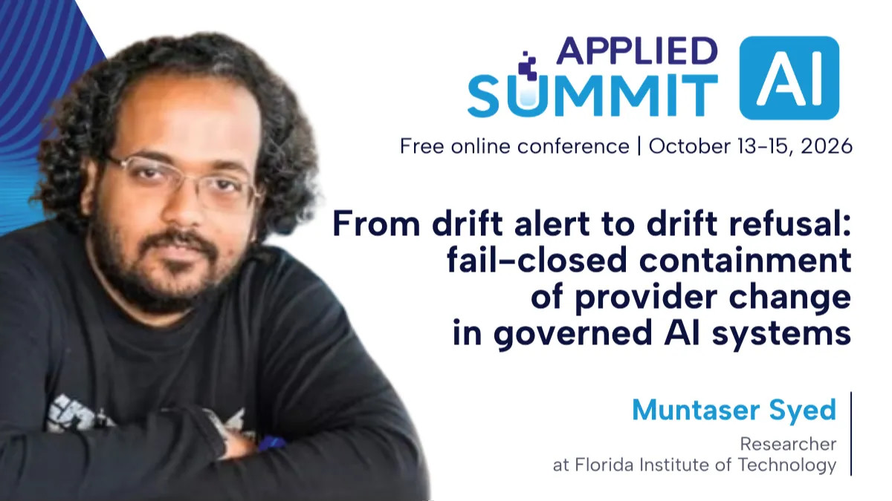

SOFTWARE DEMO · ALPHA
SOFTWARE DEMO · ALPHA
CorpusKit: Speech Corpus Design Workbench
Evaluate phoneme coverage and select sentences in CorpusKit, the alpha web workbench built on Corpusgen.
Speaking / Talks · workshops · lectures
I speak and teach about trustworthy AI, agent security, Model Context Protocol systems, semantic data, energy-efficient machine learning, and human-centered AI-assisted development.
Watch / Research & software
Recorded paper presentations and a hands-on software demo, with links to the work behind each video.
SOFTWARE DEMO · ALPHA
Evaluate phoneme coverage and select sentences in CorpusKit, the alpha web workbench built on Corpusgen.
 PAPER PRESENTATION · AGENTICS 2026
PAPER PRESENTATION · AGENTICS 2026
How compositional agent DNA supports automated multi-agent synthesis and discovery, with an overview of the experimental evaluation.
 PAPER PRESENTATION · CLOUDCOM 2026
PAPER PRESENTATION · CLOUDCOM 2026
Why utilization alone can misattribute shared-GPU energy, and how transistor-level modeling accounts for workload and thermal effects.
Upcoming / October–November 2026
Talks and research presentations on the calendar.
Four paper presentations on compact linked data, compliance algebra, wearable learning, and 1-bit IoT routers.
Presenting transistor-level energy attribution for containerized ML workloads in the sustainability, efficiency, and security session.
A full-paper presentation on persistent LLM context management, scheduled for 11:30 a.m. Eastern in Boca Raton.
The water and carbon cost of sovereign AI: how siting and cooling choices affect urban AI infrastructure.
Recent session · October 15
Applied AI Summit · Day 3: AI Governance
– US Eastern (19:00–19:30 UTC) · Online
Muntaser Syed · Researcher at Florida Institute of Technology
Official schedule
Recent keynote · October 8
. Presented at AiSalon Miami at Mana Tech Loft 10, introducing Pollard and the controls that let AI agents refuse, pause, and prove what happened before real-world actions.
Event recordExplore PollardDelivered keynote · December 2024
Delivered during the – conference, exploring safety and security considerations for language models in low-resource languages.
Keynote program record2024 archive2026 engagements
Conference talks, workshops, and research presentations.
Accepted technical talk at the 2026 IEEE Smart City USA Conference, held online on November 21.
Drawing on our environmental-cost research, the talk compares modeled water, energy, and carbon impacts of hypothetical AI deployments across the UAE, Bangladesh, India, and Kenya, connecting siting and cooling choices to urban infrastructure decisions.
Upcoming full-paper presentation at IEEE ICTAI 2026 in Boca Raton. The final program lists me at 11:30 a.m. Eastern, Session 12A, Royal Palm 1.
Hashrope brings persistent context editing, branching, prefix identity checks, and repetition encoding into one data structure.
I’m presenting our paper, coauthored with Marius Silaghi and Rwaida Alssadi, in IEEE CloudCom 2026’s Cloud Computing: Sustainability, Efficiency, and Security session, Main Track — Alésia Room, Paris.
The session runs 14:00–15:30 Paris time (CET).
Four paper presentations at IEEE WF-IoT 2026 on October 26: CBOR-LD-Ex, Compliance Algebra for IoT Energy Data Governance, IMU-JEPA, and Zero-Shot Attack-Family Generalization with 1-Bit LLM Routers.
Speaker alongside Dwane Hemmings at Orlando Devs’ meetup on practical open-source contributions and tools, with a preview of Central Florida DevFest. The event took place at Worth in Winter Park, Florida.
Three paper presentations at IEEE HealthCom 2026, October 19–21, at the Yeshiva Museum in New York.
October 19, 14:30–15:45: FHIR R4 / HIPAA compliance algebra, Main Track Poster Session 1, Great Hall.
October 20, 14:30–15:45: Drug Integrity Algebra, Main Track Poster Session 3, Great Hall.
October 21, 10:15–11:30: Privacy-Preserving Retrieval-Augmented Generation for Healthcare, Workshop 5 (WCIHS 2026), Kovno Room.
Applied AI Summit presentation in Day 3: AI Governance on Thursday, October 15, 2026, 3:00–3:30 p.m. US Eastern (19:00–19:30 UTC). Muntaser Syed, Researcher at Florida Institute of Technology.
Two paper presentations in Session 7B, Socio-Technical Approaches in Engineering, at the University of Colorado Boulder: the LLM-assisted-work ergonomics study and the environmental-cost study of sovereign AI infrastructure.
Session: 13:00–14:30, Room C120B.
Presented at AiSalon Miami at Mana Tech Loft 10, introducing Pollard and the controls that let AI agents refuse, pause, and prove what happened before real-world actions.
Presented at IEEE ICMLA 2026 in Special Session 1A (SS1-A), covering multi-layer QR encoding through color-channel multiplexing and neural-assisted decoding.
Presented in the IEEE MLSP 2026 poster session in Atlanta, applying TOML’s physics-grounded energy model to 37 signal-processing algorithms.
Delivered to a standing-room-only audience at DeepStation AI Demo Night, Miami Dade College’s Wolfson Campus. A live workflow took a model through LoRA fine-tuning, ONNX INT8 optimization, evaluation, and release gates. Slides, measured results, and a runnable Colab exercise are available.
Demonstrated compact linked-data messages carrying trust and compliance annotations for constrained IoT devices at The DOCK in Miami.
Presented in the IEEE IRI 2026 Retrieval-Augmented Generation & Knowledge Graphs session in Seattle, covering temporal validity and stale-evidence controls for RAG.
Presented at IEEE IRI 2026 in Seattle, introducing uncertainty-aware guardrails for LLM-driven IoT actuation.
A hands-on GDG Central Florida workshop using JSON-LD Ex to represent confidence, uncertainty, provenance, and compliance in AI systems.
An AgentCon Miami main-track talk and interactive defense lab on MCP, agent, and AI-pipeline attack surfaces.
Four paper and poster presentations at FLAIRS-39 in Marco Island, including talks on JSON-LD Ex and wearable neck-posture classification.
An AI Masterclass with Tad Duval at The DOCK in Miami, exploring agentic development workflows and harnesses. The event covered Claude Code, Dispatch, Ralph Loops, and Autoresearch.
An Orlando Code Camp session on extending linked data with AI confidence, provenance, temporal scope, and security metadata.
A three-hour workshop delivered at Miami Dade College on building agents with Google ADK, connecting tools through MCP, coordinating agents with A2A, and deploying to Google Cloud.
2025 engagements
Public instruction across agentic AI, fine-tuning, model evaluation, and custom GPTs.
A lecture for an ACM chapter in Melbourne, Florida, on AI agent architectures and practical implementation patterns, with notebooks and code examples.
A hands-on technical masterclass at The DOCK in Miami covering neural networks and model fine-tuning.
A Vibe Days session at The LAB Miami on rapid interface building and prompt-driven development.
Presented on generative-engine optimization at The DOCK in Miami. The session covered MCP keyword analysis with Semrush and llms.txt, plus an evaluation segment with Tad Duval using LangChain and LangSmith.
An AI Revolution 2025 discussion with Gabe Klein on AI in engineering and software development.
A DeepStation and GPTechday workshop in Miami on retrieval, safety controls, and mixture-of-experts techniques.
OpenAI Academy lists Muntaser Syed as a speaker for this online workshop, presented by DeepStation and co-presented with Grant Kurz.
A South Florida AI Summit session at The LAB Miami on separating credible AGI trajectories from marketing claims.
2024 engagements
The WVLL keynote, NOAA and NASA events, plus technical moderation and team mentoring at Princeton.
Delivered keynote at WVLL 2024, the International Winter Conference on Vision, Language & Learning, during its December 18–19 conference.
A speaking engagement at NASA’s GPU Hackathon for accelerated scientific computing, held September 10 and 17–19.
Technical moderator and mentor for several teams working to accelerate and optimize scientific applications. The hybrid event met June 4 and June 12–14.
Teaching at NASA’s bootcamp on end-to-end large language model workflows, including training, tuning, deployment, and guardrails.
A speaking engagement at the hybrid scientific-computing hackathon based at the David Skaggs Research Center in Boulder, Colorado.
A speaking engagement at the two-day bootcamp on AI methods and accelerated workflows for scientific computing.
Earlier appearances
Earlier talks and research presentations spanning AI, robotics, UAVs, cybersecurity, and the hacker community.
A talk on ChatGPT at the IEEE Cruise Conference in October 2023.
Speaker for Tampa Devs’ introductory machine-learning event at Embarc Collective in Tampa.
A 55-minute guest interview on The Hackathon Podcast.
A South Florida GIS Expo presentation in West Palm Beach with Gamal Bohouta and Veton Z. Këpuska.
Accepted poster for NAECON 2018. Presenting author: Muntaser Syed.
A FLAIRS-31 poster presentation in Melbourne, Florida.
A Florida Conference on Recent Advances in Robotics presentation at UCF.
Accepted abstract by Muntaser Syed and Mohammad Algarni in AHFE 2016’s Human Factors in Cybersecurity session.
Teaching archive
Labs, workshop curricula, and session pages that remain useful beyond a single event.
Slides, a complete Colab exercise, measured results, and an attendee handout for fine-tuning, optimizing, evaluating, and releasing a model.
A one-hour lecture and two-hour hands-on workshop covering gateways, production architecture, and advanced MCP implementations.
An interactive lab on MCP, autonomous-agent, and AI-pipeline attack surfaces with defensive patterns.
Seven notebooks and three capstone projects from the Miami Dade College workshop, covering Google ADK, MCP, A2A, and deployment to Google Cloud.
Notebooks and code examples from the ACM chapter lecture in Melbourne, Florida, on agent architectures and practical implementation patterns.
Current abstracts and session formats for trustworthy AI, sustainable AI infrastructure, MCP security, JSON-LD Ex, XAI evaluation, and human-centered development.
Invite / collaborate
For conference sessions, workshops, guest lectures, or technical panels, email me with the audience, format, and proposed date.